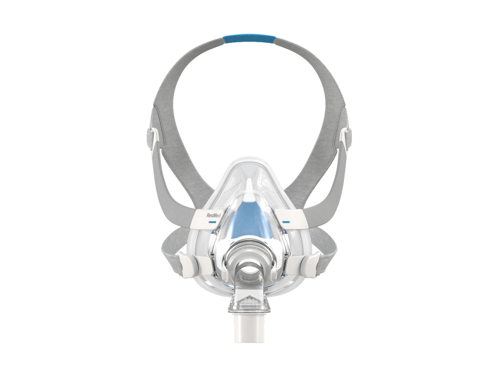

B+review gradeResMed AirFit F20
B−Fit
BComfort
CSeal
C−Sleep
B−Ease
C−Durability
Best reported match
Combination sleepersFacial hair
Extra caution
Smaller facial featuresClaustrophobia
Aspect grades use one vote per distinct review. Every grade will show its evidence count on hover/detail; fewer than five reviews displays “—”.